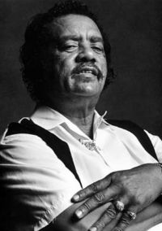
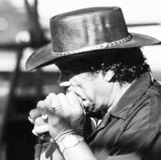

Отец-основатель, пожалуй, самого большого блюзового семейства-клана (11 человек, с ними могут соревноваться, наверное, только Harrington'ы) - Raful Neal является одним из самых известных и виртуозных харперов Луизианы.
Raful Neal родился 6 июля 1936 года в городе Baton Rouge, шт. Луизиана. Первая гармошка появилась у юного Рафула в 14 лет, он начинает изучать этот замечательный инструмент под влиянием звезды Чикаго, новатора и виртуоза - Little Walter. Raful Neal быстро становится известным харпером сцены города Baton Rouge (в будущем знаменитой кузницей известных блюзменов). Там же он знакомится еще с двумя знаменитыми “луизианцами” братьями Guy (Buddy и Phil).
Существует знаменитая история о том, как ансамбль Raful'а Neal'а, включающий двух вышеназванных гитаристов, играл на одной сцене со своим кумиром - Little Walter и:чуть ли не “выдул” его со сцены. После чего, звезда Чикаго сообщил музыкантам о том, что они уже “созрели” для Города Ветров. Братья Гай вняли совету старшего товарища по цеху, а обзаведшийся к тому времени семьей Рафул, предпочел остаться в родной Луизиане, чтобы заниматься домом и блюзом там, где он вырос.
В 1958 году выпустил свою первую сорокапятку на Peacock Records. Оставаясь локальным гармошечником Луизианы, при всех своих достоинствах не достиг известности за пределами штата. Зато семейная жизнь Нила была просто замечательной - рождается сын - Kenny Neal - в будущем известный блюзовый гитарист, прошедший школу Buddy Guy, ZZ Hill и многих других звезд.

В 70-х годах Рафул выступает в клубах Луизианы, вместе со своим сыном (с 13 лет), но чтобы содержать растущую семью, вынужден подрабатывать в агентстве по недвижимости. В конце семидесятых, “больной” блюзом не менее отца, Kenny уезжает набираться мудрости в Чикаго, но с отцом остаются его остальные многочисленные сыновья, тоже блюзмены.
Свой первый альбом Raful выпустил, как это не странно, в 1990 году в период возрождения массового интереса к блюзу. Альбом носит правдивое и громкое название “Louisiana Legend”. Эта запись стала возвращением легенды, знакомство слушателей с подлинным мастером и его сыновьями, которые участвовали в записи альбома. С этого момента начинается активная гастрольная деятельность по всему миру, записи с другими музыкантами.
Kоличество записей Raful Neal не велико(3 альбома, и те записаны в 90-х), зато просто огромен его вклад в блюз, особенно в луизианский, не говоря уже о 9 детях, тоже известных музыкантах, играющих со всеми, от James Cotton до Johnny Winter, Lucky Peterson. Дети не забывают об отце, выступая с ним, устраивая концерты от имени всей семьи.
Константин Колесниченко [aka Wheel]
bluesharp.inkharkov.com